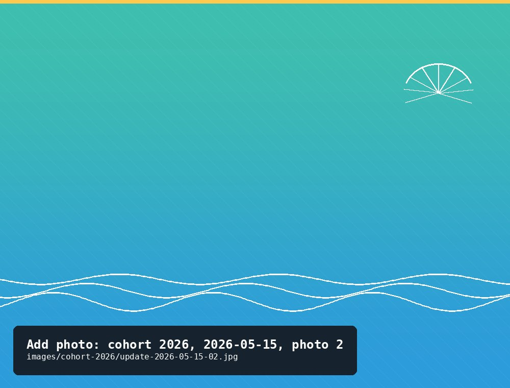
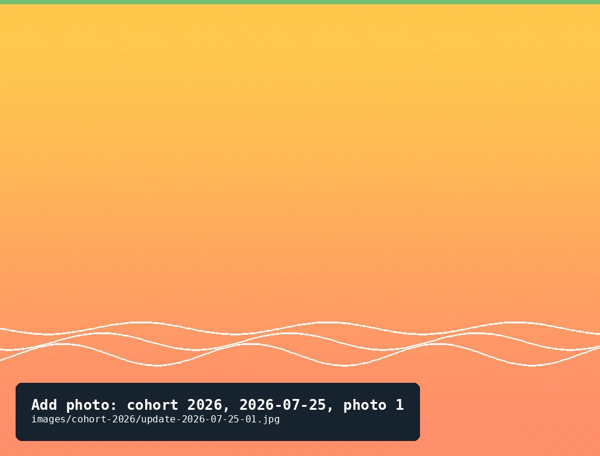

Cohort 2026
A new cohort from Darryl, 459 oysters, started May 15, 2026 — the garden's current cohort, and one that's already had an eventful summer.
375Current count
2⅜ inLargest shell recorded
6Updates logged
A new cohort from Darryl, 459 oysters, started May 15, 2026 — the garden's current cohort, and one that's already had an eventful summer.
The short version
This cohort started with 459 oysters in May 2026 and held close to that number through June. In late July, one of the cage floats broke open and roughly 78 oysters were lost at once — by far the biggest event of the cohort so far, and separate from the small, steady trickle of ordinary mortality. A week later, a first attempt at an AI-assisted photo count came in well under the manual count, after missing oysters that were doubled up in the tray. And in late August, seven of the "lost" oysters turned up on the river bottom nearby and rejoined the count.
Update log
A new cohort from Darryl, delivered as very young spat.
New cohort from Darryl.

A quick check-in — count essentially holding steady.
The cage float broke open sometime before this check, and roughly 78 oysters were lost — far more than routine mortality. Recorded mortality for the visit itself was 3; the rest of the drop is attributed to the float failure.
That weird skinny fish.
A float broke open and 78 oysters were lost.

First try at an AI-assisted photo count, run alongside the manual count as a cross-check. The two didn't match this time.
Very little.
Jelly fish.
The AI count came in low — it missed a double-up in the large batch, undercounting by roughly 44 oysters.
Seven oysters — presumably some of the ones lost in the July float failure — were found on the river bottom nearby and returned to the cage, more than offsetting this period's mortality.
Found 7 on bottom of river.
*Recorded as ounces in the source log; worth double-checking against the largest oyster's weight in grams, since the two units land close in magnitude here.
Count holding steady with routine, low-level mortality.
*Same unit note as above. Also worth a look: this update's largest diameter (1¾ in) is smaller than August 26's (2⅜ in) — likely just a different oyster measured, but flagging in case it's a transcription slip.